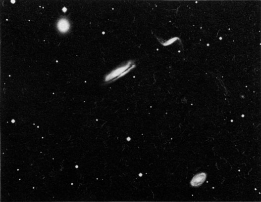
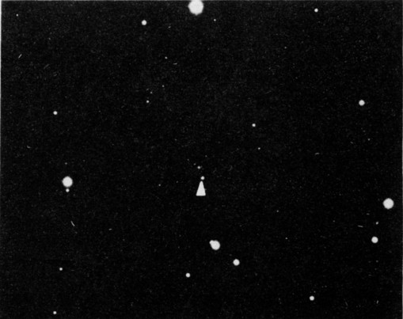

Chapter materials
NotebookLM-generated study materials for this chapter.
5. Time and Distance
5–1 Motion#
In this chapter we shall consider some aspects of the concepts of time and distance. It has been emphasized earlier that physics, as do all the sciences, depends on observation. One might also say that the development of the physical sciences to their present form has depended to a large extent on the emphasis which has been placed on the making of quantitative observations. Only with quantitative observations can one arrive at quantitative relationships, which are the heart of physics.
Many people would like to place the beginnings of physics with the work done 350 years ago by Galileo, and to call him the first physicist. Until that time, the study of motion had been a philosophical one based on arguments that could be thought up in one’s head. Most of the arguments had been presented by Aristotle and other Greek philosophers, and were taken as “proven.” Galileo was skeptical, and did an experiment on motion which was essentially this: He allowed a ball to roll down an inclined trough and observed the motion. He did not, however, just look; he measured how far the ball went in how long a time.
The way to measure a distance was well known long before Galileo, but there were no accurate ways of measuring time, particularly short times. Although he later devised more satisfactory clocks (though not like the ones we know), Galileo’s first experiments on motion were done by using his pulse to count off equal intervals of time. Let us do the same.
We may count off beats of a pulse as the ball rolls down the track: “one … two … three … four … five … six … seven … eight …” We ask a friend to make a small mark at the location of the ball at each count; we can then measure the distance the ball travelled from the point of release in one, or two, or three, etc., equal intervals of time. Galileo expressed the result of his observations in this way: if the location of the ball is marked at 1, 2, 3, 4, … units of time from the instant of its release, those marks are distant from the starting point in proportion to the numbers 1, 4, 9, 16, … Today we would say the distance is proportional to the square of the time:

The study of motion, which is basic to all of physics, treats with the questions: where? and when?
5–2 Time#
Let us consider first what we mean by time. What is time? It would be nice if we could find a good definition of time. Webster defines “a time” as “a period,” and the latter as “a time,” which doesn’t seem to be very useful. Perhaps we should say: “Time is what happens when nothing else happens.” Which also doesn’t get us very far. Maybe it is just as well if we face the fact that time is one of the things we probably cannot define (in the dictionary sense), and just say that it is what we already know it to be: it is how long we wait!
What really matters anyway is not how we define time, but how we measure it. One way of measuring time is to utilize something which happens over and over again in a regular fashion—something which is periodic. For example, a day. A day seems to happen over and over again. But when you begin to think about it, you might well ask: “Are days periodic; are they regular? Are all days the same length?” One certainly has the impression that days in summer are longer than days in winter. Of course, some of the days in winter seem to get awfully long if one is very bored. You have certainly heard someone say, “My, but this has been a long day!”
It does seem, however, that days are about the same length on the average. Is there any way we can test whether the days are the same length—either from one day to the next, or at least on the average? One way is to make a comparison with some other periodic phenomenon. Let us see how such a comparison might be made with an hour glass. With an hour glass, we can “create” a periodic occurrence if we have someone standing by it day and night to turn it over whenever the last grain of sand runs out.
We could then count the turnings of the glass from each morning to the next. We would find, this time, that the number of “hours” (i.e., turnings of the glass) was not the same each “day.” We should distrust the sun, or the glass, or both. After some thought, it might occur to us to count the “hours” from noon to noon. (Noon is here defined not as 12:00 o’clock, but that instant when the sun is at its highest point.) We would find, this time, that the number of “hours” each day is the same.
We now have some confidence that both the “hour” and the “day” have a regular periodicity, i.e., mark off successive equal intervals of time, although we have not proved that either one is “really” periodic. Someone might question whether there might not be some omnipotent being who would slow down the flow of sand every night and speed it up during the day. Our experiment does not, of course, give us an answer to this sort of question. All we can say is that we find that a regularity of one kind fits together with a regularity of another kind. We can just say that we base our definition of time on the repetition of some apparently periodic event.
5–3 Short times#
We should now notice that in the process of checking on the reproducibility of the day, we have received an important by-product. We have found a way of measuring, more accurately, fractions of a day. We have found a way of counting time in smaller pieces. Can we carry the process further, and learn to measure even smaller intervals of time?
Galileo decided that a given pendulum always swings back and forth in equal intervals of time so long as the size of the swing is kept small. A test comparing the number of swings of a pendulum in one “hour” shows that such is indeed the case. We can in this way mark fractions of an hour. If we use a mechanical device to count the swings—and to keep them going—we have the pendulum clock of our grandfathers.
Let us agree that if our pendulum oscillates 3600 times in one hour (and if there are 24 such hours in a day), we shall call each period of the pendulum one “second.” We have then divided our original unit of time into approximately 10^5 parts. We can apply the same principles to divide the second into smaller and smaller intervals. It is, you will realize, not practical to make mechanical pendulums which go arbitrarily fast, but we can now make electrical pendulums, called oscillators, which can provide a periodic occurrence with a very short period of swing. In these electronic oscillators it is an electrical current which swings to and fro, in a manner analogous to the swinging of the bob of the pendulum.
We can make a series of such electronic oscillators, each with a period 10 times shorter than the previous one. We may “calibrate” each oscillator against the next slower one by counting the number of swings it makes for one swing of the slower oscillator. When the period of oscillation of our clock is shorter than a fraction of a second, we cannot count the oscillations without the help of some device which extends our powers of observation. One such device is the electron-beam oscilloscope, which acts as a sort of microscope for short times. This device plots on a fluorescent screen a graph of electrical current (or voltage) versus time. By connecting the oscilloscope to two of our oscillators in sequence, so that it plots a graph first of the current in one of our oscillators and then of the current in the other, we get two graphs like those shown in Fig. 5–2. We can readily determine the number of periods of the faster oscillator in one period of the slower oscillator.

With modern electronic techniques, oscillators have been built with periods as short as about 10^{-12} second, and they have been calibrated (by comparison methods such as we have described) in terms of our standard unit of time, the second. With the invention and perfection of the “laser,” or light amplifier, in the past few years, it has become possible to make oscillators with even shorter periods than 10^{-12} second, but it has not yet been possible to calibrate them by the methods which have been described, although it will no doubt soon be possible.
Times shorter than 10^{-12} second have been measured, but by a different technique. In effect, a different definition of “time” has been used. One way has been to observe the distance between two happenings on a moving object. If, for example, the headlights of a moving automobile are turned on and then off, we can figure out how long the lights were on if we know where they were turned on and off and how fast the car was moving. The time is the distance over which the lights were on divided by the speed.
Within the past few years, just such a technique was used to measure the lifetime of the \pi^0 -meson. By observing in a microscope the minute tracks left in a photographic emulsion in which \pi^0 -mesons had been created one saw that a \pi^0 -meson (known to be travelling at a certain speed nearly that of light) went a distance of about 10^{-7} meter, on the average, before disintegrating. It lived for only about 10^{-16} sec. It should be emphasized that we have here used a somewhat different definition of “time” than before. So long as there are no inconsistencies in our understanding, however, we feel fairly confident that our definitions are sufficiently equivalent.
By extending our techniques—and if necessary our definitions—still further we can infer the time duration of still faster physical events. We can speak of the period of a nuclear vibration. We can speak of the lifetime of the newly discovered strange resonances (particles) mentioned in Chapter 2. Their complete life occupies a time span of only 10^{-24} second, approximately the time it would take light (which moves at the fastest known speed) to cross the nucleus of hydrogen (the smallest known object).
What about still smaller times? Does “time” exist on a still smaller scale? Does it make any sense to speak of smaller times if we cannot measure—or perhaps even think sensibly about—something which happens in a shorter time? Perhaps not. These are some of the open questions which you will be asking and perhaps answering in the next twenty or thirty years.
5–4 Long times#
Let us now consider times longer than one day. Measurement of longer times is easy; we just count the days—so long as there is someone around to do the counting. First we find that there is another natural periodicity: the year, about 365 days. We have also discovered that nature has sometimes provided a counter for the years, in the form of tree rings or river-bottom sediments. In some cases we can use these natural time markers to determine the time which has passed since some early event.
When we cannot count the years for the measurement of long times, we must look for other ways to measure. One of the most successful is the use of radioactive material as a “clock.” In this case we do not have a periodic occurrence, as for the day or the pendulum, but a new kind of “regularity.” We find that the radioactivity of a particular sample of material decreases by the same fraction for successive equal increases in its age. If we plot a graph of the radioactivity observed as a function of time (say in days), we obtain a curve like that shown in Fig. 5–3. We observe that if the radioactivity decreases to one-half in T days (called the “half-life”), then it decreases to one-quarter in another T days, and so on. In an arbitrary time interval t there are t/T “half-lives,” and the fraction left after this time t is (\frac{1}{2})^{t/T}.

If we knew that a piece of material, say a piece of wood, had contained an amount A of radioactive material when it was formed, and we found out by a direct measurement that it now contains the amount B, we could compute the age of the object, t, by solving the equation
There are, fortunately, cases in which we can know the amount of radioactivity that was in an object when it was formed. We know, for example, that the carbon dioxide in the air contains a certain small fraction of the radioactive carbon isotope C ^{14} (replenished continuously by the action of cosmic rays). If we measure the total carbon content of an object, we know that a certain fraction of that amount was originally the radioactive C ^{14}; we know, therefore, the starting amount A to use in the formula above. Carbon-14 has a half-life of 5000 years. By careful measurements we can measure the amount left after 20 half-lives or so and can therefore “date” organic objects which grew as long as 100{,}000 years ago.
We would like to know, and we think we do know, the life of still older things. Much of our knowledge is based on the measurements of other radioactive isotopes which have different half-lives. If we make measurements with an isotope with a longer half-life, then we are able to measure longer times. Uranium, for example, has an isotope whose half-life is about 10^9 years, so that if some material was formed with uranium in it 10^9 years ago, only half the uranium would remain today. When the uranium disintegrates, it changes into lead. Consider a piece of rock which was formed a long time ago in some chemical process. Lead, being of a chemical nature different from uranium, would appear in one part of the rock and uranium would appear in another part of the rock. The uranium and lead would be separate. If we look at that piece of rock today, where there should only be uranium we will now find a certain fraction of uranium and a certain fraction of lead. By comparing these fractions, we can tell what percent of the uranium disappeared and changed into lead. By this method, the age of certain rocks has been determined to be several billion years. An extension of this method, not using particular rocks but looking at the uranium and lead in the oceans and using averages over the earth, has been used to determine (within the past few years) that the age of the earth itself is approximately 4.5 billion years.
It is encouraging that the age of the earth is found to be the same as the age of the meteorites which land on the earth, as determined by the uranium method. It appears that the earth was formed out of rocks floating in space, and that the meteorites are, quite likely, some of that material left over. At some time more than five billion years ago, the universe started. It is now believed that at least our part of the universe had its beginning about ten or twelve billion years ago. We do not know what happened before then. In fact, we may well ask again: Does the question make any sense? Does an earlier time have any meaning?
5–5 Units and standards of time#
We have implied that it is convenient if we start with some standard unit of time, say a day or a second, and refer all other times to some multiple or fraction of this unit. What shall we take as our basic standard of time? Shall we take the human pulse? If we compare pulses, we find that they seem to vary a lot. On comparing two clocks, one finds they do not vary so much. You might then say, well, let us take a clock. But whose clock? There is a story of a Swiss boy who wanted all of the clocks in his town to ring noon at the same time. So he went around trying to convince everyone of the value of this. Everyone thought it was a marvelous idea so long as all of the other clocks rang noon when his did! It is rather difficult to decide whose clock we should take as a standard. Fortunately, we all share one clock—the earth. For a long time the rotational period of the earth has been taken as the basic standard of time. As measurements have been made more and more precise, however, it has been found that the rotation of the earth is not exactly periodic, when measured in terms of the best clocks. These “best” clocks are those which we have reason to believe are accurate because they agree with each other. We now believe that, for various reasons, some days are longer than others, some days are shorter, and on the average the period of the earth becomes a little longer as the centuries pass.
Until very recently we had found nothing much better than the earth’s period, so all clocks have been related to the length of the day, and the second has been defined as 1/86{,}400 of an average day. Recently we have been gaining experience with some natural oscillators which we now believe would provide a more constant time reference than the earth, and which are also based on a natural phenomenon available to everyone. These are the so-called “atomic clocks.” Their basic internal period is that of an atomic vibration which is very insensitive to the temperature or any other external effects. These clocks keep time to an accuracy of one part in 10^9 or better. Within the past two years an improved atomic clock which operates on the vibration of the hydrogen atom has been designed and built by Professor Norman Ramsey at Harvard University. He believes that this clock might be 100 times more accurate still. Measurements now in progress will show whether this is true or not.
We may expect that since it has been possible to build clocks much more accurate than astronomical time, there will soon be an agreement among scientists to define the unit of time in terms of one of the atomic clock standards.
5–6 Large distances#
Let us now turn to the question of distance. How far, or how big, are things? Everybody knows that the way you measure distance is to start with a stick and count. Or start with a thumb and count. You begin with a unit and count. How does one measure smaller things? How does one subdivide distance? In the same way that we subdivided time: we take a smaller unit and count the number of such units it takes to make up the longer unit. So we can measure smaller and smaller lengths.
But we do not always mean by distance what one gets by counting off with a meter stick. It would be difficult to measure the horizontal distance between two mountain tops using only a meter stick. We have found by experience that distance can be measured in another fashion: by triangulation. Although this means that we are really using a different definition of distance, when they can both be used they agree with each other. Space is more or less what Euclid thought it was, so the two types of definitions of distance agree. Since they do agree on the earth it gives us some confidence in using triangulation for still larger distances. For example, we were able to use triangulation to measure the height of the first Sputnik. We found that it was roughly 5\times10^5 meters high. By more careful measurements the distance to the moon can be measured in the same way. Two telescopes at different places on the earth can give us the two angles we need. It has been found in this way that the moon is 4\times10^8 meters away.

We cannot do the same with the sun, or at least no one has been able to yet. The accuracy with which one can focus on a given point on the sun and with which one can measure angles is not good enough to permit us to measure the distance to the sun. Then how can we measure the distance to the sun? We must invent an extension of the idea of triangulation. We measure the relative distances of all the planets by astronomical observations of where the planets appear to be, and we get a picture of the solar system with the proper relative distances of everything, but with no absolute distance. One absolute measurement is then required, which has been obtained in a number of ways. One of the ways, which was believed until recently to be the most accurate, was to measure the distance from the earth to Eros, one of the small planetoids which passes near the earth every now and then. By triangulation on this little object, one could get the one required scale measurement. Knowing the relative distances of the rest, we can then tell the distance, for example, from the earth to the sun, or from the earth to Pluto.
Within the past year there has been a big improvement in our knowledge of the scale of the solar system. At the Jet Propulsion Laboratory the distance from the earth to Venus was measured quite accurately by a direct radar observation. This, of course, is a still different type of inferred distance. We say we know the speed at which light travels (and therefore, at which radar waves travel), and we assume that it is the same speed everywhere between the earth and Venus. We send the radio wave out, and count the time until the reflected wave comes back. From the time we infer a distance, assuming we know the speed. We have really another definition of a measurement of distance.
How do we measure the distance to a star, which is much farther away? Fortunately, we can go back to our triangulation method, because the earth moving around the sun gives us a large baseline for measurements of objects outside the solar system. If we focus a telescope on a star in summer and in winter, we might hope to determine these two angles accurately enough to be able to measure the distance to a star.
What if the stars are too far away for us to use triangulation? Astronomers are always inventing new ways of measuring distance. They find, for example, that they can estimate the size and brightness of a star by its color. The color and brightness of many nearby stars—whose distances are known by triangulation—have been measured, and it is found that there is a smooth relationship between the color and the intrinsic brightness of stars (in most cases). If one now measures the color of a distant star, one may use the color-brightness relationship to determine the intrinsic brightness of the star. By measuring how bright the star appears to us at the earth (or perhaps we should say how dim it appears), we can compute how far away it is. (For a given intrinsic brightness, the apparent brightness decreases with the square of the distance.) A nice confirmation of the correctness of this method of measuring stellar distances is given by the results obtained for groups of stars known as globular clusters. A photograph of such a group is shown in Fig. 5–6. Just from looking at the photograph one is convinced that these stars are all together. The same result is obtained from distance measurements by the color-brightness method.

A study of many globular clusters gives another important bit of information. It is found that there is a high concentration of such clusters in a certain part of the sky and that most of them are about the same distance from us. Coupling this information with other evidence, we conclude that this concentration of clusters marks the center of our galaxy. We then know the distance to the center of the galaxy—about 10^{20} meters.
Knowing the size of our own galaxy, we have a key to the measurement of still larger distances—the distances to other galaxies. Figure 5–7 is a photograph of a galaxy, which has much the same shape as our own. Probably it is the same size, too. (Other evidence supports the idea that galaxies are all about the same size.) If it is the same size as ours, we can tell its distance. We measure the angle it subtends in the sky; we know its diameter, and we compute its distance—triangulation again!

Photographs of exceedingly distant galaxies have recently been obtained with the giant Palomar telescope. One is shown in Fig. 5–8. It is now believed that some of these galaxies are about halfway to the limit of the universe— 10^{26} meters away—the largest distance we can contemplate!

5–7 Short distances#
Now let’s think about smaller distances. Subdividing the meter is easy. Without much difficulty we can mark off one thousand equal spaces which add up to one meter. With somewhat more difficulty, but in a similar way (using a good microscope), we can mark off a thousand equal subdivisions of the millimeter to make a scale of microns (millionths of a meter). It is difficult to continue to smaller scales, because we cannot “see” objects smaller than the wavelength of visible light (about 5\times10^{-7} meter).

We need not stop, however, at what we can see. With an electron microscope, we can continue the process by making photographs on a still smaller scale, say down to 10^{-8} meter (Fig. 5–9). By indirect measurements—by a kind of triangulation on a microscopic scale—we can continue to measure to smaller and smaller scales. First, from an observation of the way light of short wavelength (x-radiation) is reflected from a pattern of marks of known separation, we determine the wavelength of the light vibrations. Then, from the pattern of the scattering of the same light from a crystal, we can determine the relative location of the atoms in the crystal, obtaining results which agree with the atomic spacings also determined by chemical means. We find in this way that atoms have a diameter of about 10^{-10} meter.
There is a large “gap” in physical sizes between the typical atomic dimension of about 10^{-10} meter and the nuclear dimensions 10^{-15} meter, 10^{-5} times smaller. For nuclear sizes, a different way of measuring size becomes convenient. We measure the apparent area, \sigma, called the effective cross section. If we wish the radius, we can obtain it from \sigma=\pi r^2, since nuclei are nearly spherical.
Measurement of a nuclear cross section can be made by passing a beam of high-energy particles through a thin slab of material and observing the number of particles which do not get through. These high-energy particles will plow right through the thin cloud of electrons and will be stopped or deflected only if they hit the concentrated weight of a nucleus. Suppose we have a piece of material 1 centimeter thick. There will be about 10^8 atomic layers. But the nuclei are so small that there is little chance that any nucleus will lie behind another. We might imagine that a highly magnified view of the situation—looking along the particle beam—would look like Fig. 5–10.

The chance that a very small particle will hit a nucleus on the trip through is just the total area covered by the profiles of the nuclei divided by the total area in the picture. Suppose that we know that in an area A of our slab of material there are N atoms (each with one nucleus, of course). Then the fraction of the area “covered” by the nuclei is N\sigma/A. Now let the number of particles of our beam which arrive at the slab be n_1 and the number which come out the other side be n_2. The fraction which do not get through is (n_1-n_2)/n_1, which should just equal the fraction of the area covered. We can obtain the radius of the nucleus from the equation 1
From such an experiment we find that the radii of the nuclei are from about 1 to 6 times 10^{-15} meter. The length unit 10^{-15} meter is called the fermi, in honor of Enrico Fermi (1901–1954).
What do we find if we go to smaller distances? Can we measure smaller distances? Such questions are not yet answerable. It has been suggested that the still unsolved mystery of nuclear forces may be unravelled only by some modification of our idea of space, or measurement, at such small distances.
It might be thought that it would be a good idea to use some natural length as our unit of length—say the radius of the earth or some fraction of it. The meter was originally intended to be such a unit and was defined to be (\pi/2)\times10^{-7} times the earth’s radius. It is neither convenient nor very accurate to determine the unit of length in this way. For a long time it has been agreed internationally that the meter would be defined as the distance between two scratches on a bar kept in a special laboratory in France. More recently, it has been realized that this definition is neither as precise as would be useful, nor as permanent or universal as one would like. It is currently being considered that a new definition be adopted, an agreed-upon (arbitrary) number of wavelengths of a chosen spectral line.
Measurements of distance and of time give results which depend on the observer. Two observers moving with respect to each other will not measure the same distances and times when measuring what appear to be the same things. Distances and time intervals have different magnitudes, depending on the coordinate system (or “frame of reference”) used for making the measurements. We shall study this subject in more detail in a later chapter.
Perfectly precise measurements of distances or times are not permitted by the laws of nature. We have mentioned earlier that the errors in a measurement of the position of an object must be at least as large as
where \hbar is a small fundamental physical constant called the reduced Planck constant and \Delta p is the error in our knowledge of the momentum (mass times velocity) of the object whose position we are measuring. It was also mentioned that the uncertainty in position measurements is related to the wave nature of particles.
The relativity of space and time implies that time measurements have also a minimum error, given in fact by
where \Delta E is the error in our knowledge of the energy of the process whose time period we are measuring. If we wish to know more precisely when something happened we must know less about what happened, because our knowledge of the energy involved will be less. The time uncertainty is also related to the wave nature of matter.